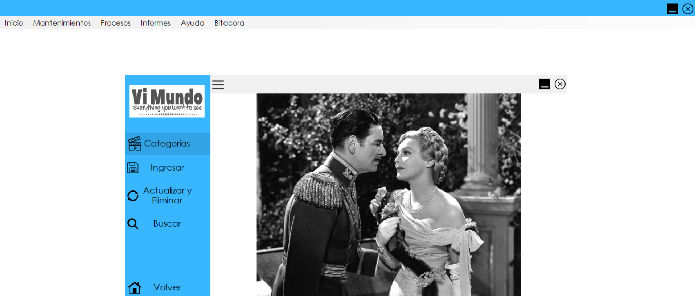
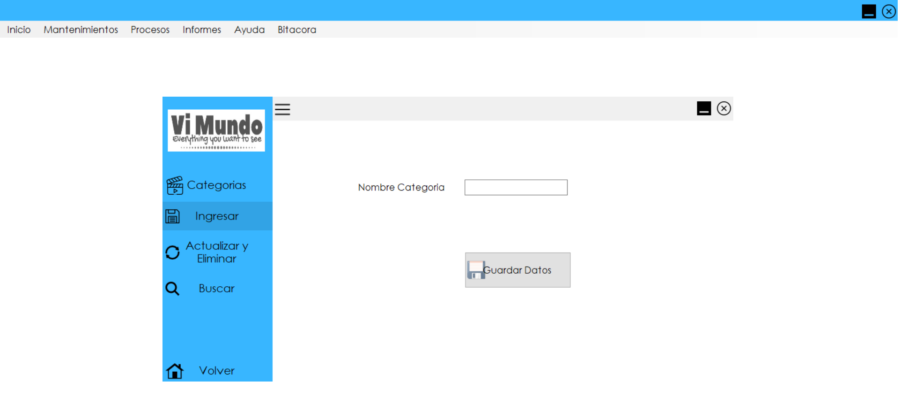
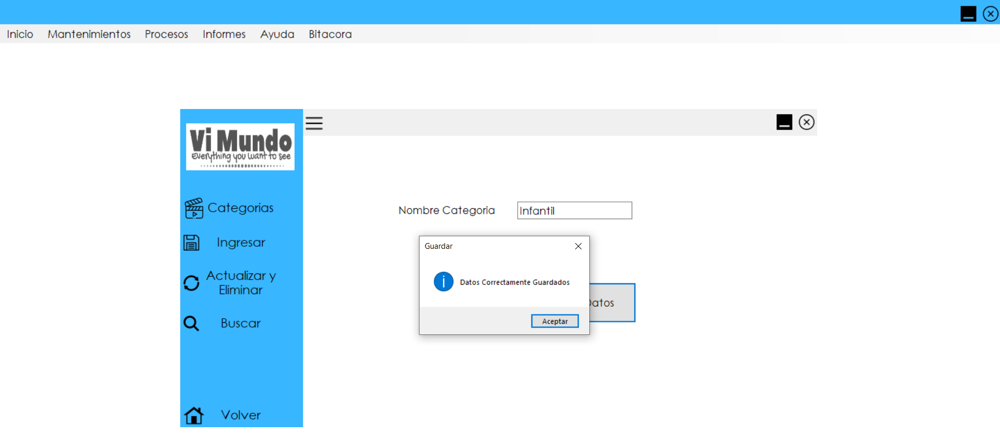
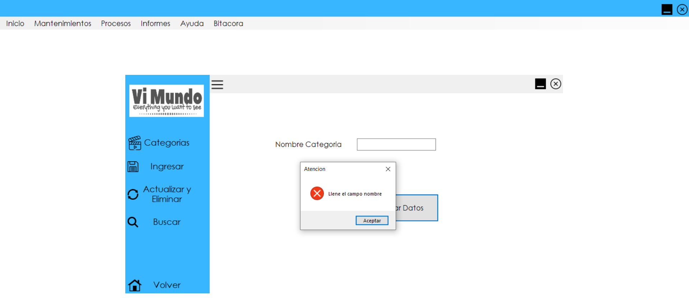
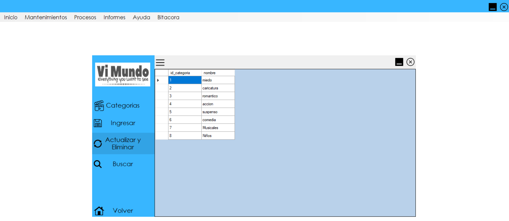
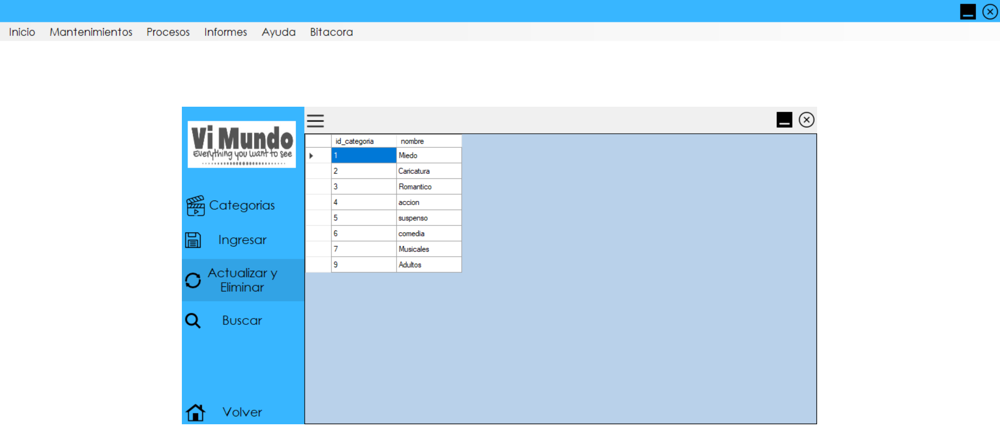
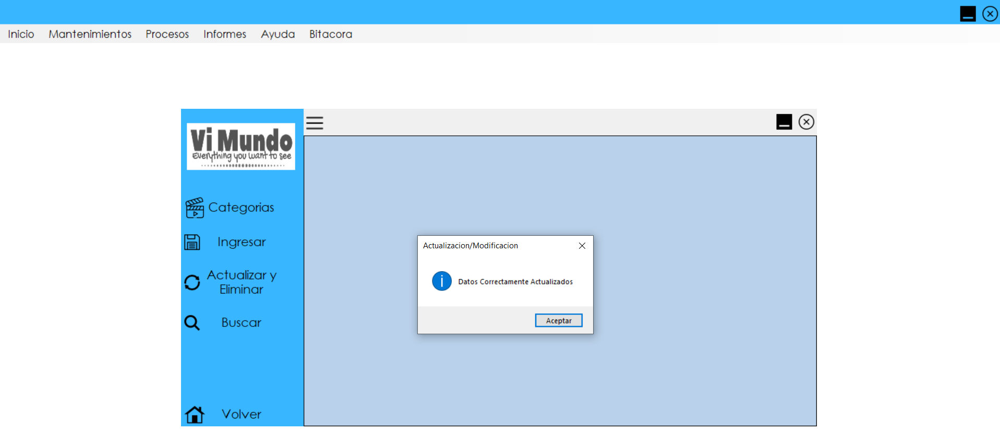

Mantenimiento Video
En el mantenimiento de videos se despliega un submenú en el cual podrá seleccionar entre Categoría Videos, Estado Video y Videos, estos formularios
contienen
especificamento solo la información referente a los Videos.
Categoria Videos
Al seleccionar esta opción aparecerá un formulario, en el cual tendrá las opciones:
1. Categorias
2. Ingresar
3. Actualizar y Eliminar
4. Buscar
1. Categorias
Muestra una presentación de imágenes, la cual se encarga de describir al formulario.
2. Ingresar
Contiene un formulario, el cual se solicita el ingreso del nombre de la categoría que no se encuentra registrada, cuando ya se ha ingresado correctamente el nombre, se da Click en el botón de Guardar Datos.
Luego aparecerá un mensaje, la cual indica que se guardaron corectamente los datos de la categoria ingresada.
Si no se ingresa los datos y se da click en el botón de Guardar Datos, aparecerá un mensaje de error, la cual indica que se tiene que llenar el campo nombre.
3. Actualizar y Eliminar
Contiene un formulario en el cual se despliega las categorías que están registradas, en el cual se puede Actualizar y Eliminar los registros.
¿Cómo Actualizar?
Para poder actualizarlo se da click en el campo que deseamos modificar o actualizar borramos el contenido y se sustituye por el dato deseado,
Cuando ya se realizo dicho cambio se da Enter y aparecerá un mensaje el cual indica que se actualizo correctamente los datos.
¿Cómo Eliminar?
Damos click derecho sobre la categoria que se desea Eliminar, se desplegará la opción de "EliminarDato". Recuerde que al ejecutar esta acción usted estará borrando todo la fila no solo un campo seleccionado.

Luego automáticamente aparecerá un mensaje el cual indica que se eliminó correctamente el dato.

4. Buscar
En este formulario se podrá Buscar que categorías son las que existen en el sistema.

El formulario contiene un menú desplegable, en el cual, se podrá seleccionar como se desea buscar la categoría, por el ID o bien por NOMBRE.

Cuando ya se ha seleccionado la categoría del video, se escribe ya sea el nombre de la categoría o bien su ID y automáticamente cargara la información de la categoría que se desea.